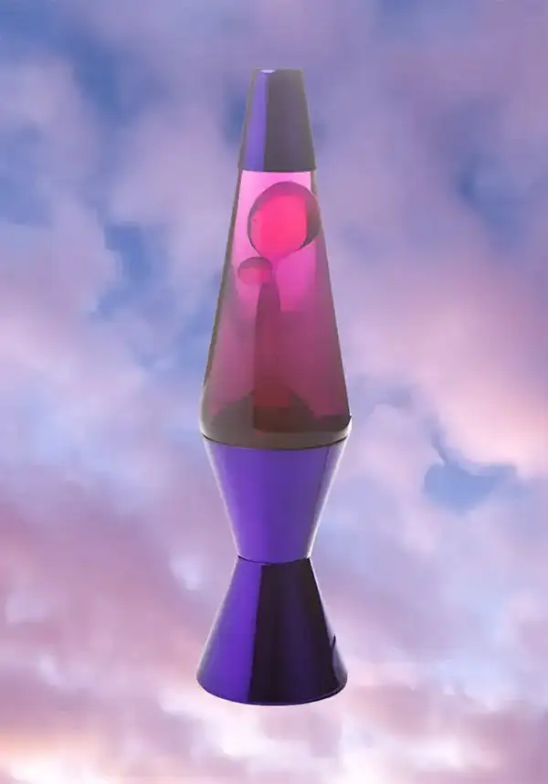

History

The Modern Lava Lamp
The modern lava lamp was invented in 1963 by British accountant Craven Walker, who was inspired by a homemade egg timer he saw in a local pub. After years of experimenting with different combinations of wax and liquid, he developed the signature floating effect that made the lamp so distinctive. Walker founded the company Crestworth to manufacture the lamps in the United Kingdom, where they were originally sold as the Astro Lamp. Their unique appearance and soothing motion quickly captured the attention of consumers looking for something different from traditional lighting. As a result, the lava lamp became an innovative decorative piece that stood out from other home accessories of the time.
During the late 1960s and early 1970s, lava lamps became closely associated with the psychedelic movement and the colorful culture of the era. Their slow-moving wax and vibrant colors made them a popular addition to homes, dorm rooms, and entertainment spaces. In the United States, the manufacturing rights were acquired by Lava Lite, allowing the lamps to reach a much larger audience. They soon appeared in television shows, movies, and advertisements, helping establish the lava lamp as a recognizable symbol of retro design. Even as decorating trends changed over the years, the lamp remained an icon of creativity and relaxation.
Although the popularity of lava lamps declined during the 1980s, they experienced a strong resurgence in the 1990s as vintage décor became fashionable once again. Manufacturers introduced new color combinations and improved production techniques while preserving the classic floating wax effect that people loved. Today, lava lamps are available in a wide variety of sizes, colors, and styles, appealing to both collectors and first-time buyers. Many vintage models are especially prized for their craftsmanship and historical value. More than sixty years after their invention, the modern lava lamp continues to be celebrated as one of the world's most recognizable decorative lighting designs.
Content created with ChatGPT by OpenAI.